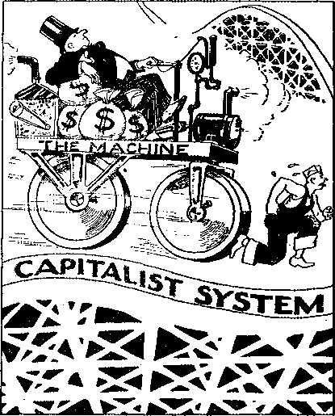

Contents
Appetizers
The World’s Four Million Wanderers
Signs of Bondage in the U. S. A.
Docs the Government Encourage Illness!
Published every other Wednesday by THE BOLDEN AGE PUBLISHING COMPANY, INC. 117 Adams St., Brooklyn, N. Y., U. S. A. President Clayton J. Woodworth
Vice-President Nathan H. Knorr
Secretary and Treasurer Charles E. Wagner
Five Cents a Copy
JI a year in the United States 11.25 to Canada and all other countries
NOTICE TO SUBSCRIBERS
Remittances: For your own safety, remit by postal or express money order. When coin or currency Is lost In the ordinary mails, there is no redress. Remittances from countries other than those named below may be made to the Brooklyn office, but only by International postal money order.
Receipt of a new or renewal subscription wilt be acknowledged only when requested. Notice of Expiration is sent with the Journal one month before subscription expires. Please renew promptly to avoid loss of copies. Send change of address direct to us rather than to the post ofllce. Your request should reach us at least two weeks before the date of Issue with which it Is to take effect. Send your old as y/ell as the new address. Copies will not be forwarded by the post office to your new address unless extra postage is provided by you.
Published also tn Bohemian, Danish, Dutch. Finnish, French, German, Greek, Japanese. Norwegian, rollah, Portuguese Spanish Swedish Hungarian Ukrainian
OFFICES FOR OTHER COUNTRIES
England 34 Craven Terrace, London, W. 2
Canada 40 Irwin Avenue, Toronto 5. Ontario Australia 7 Beresford Rond. Strathneld, N S W.
South Africa 623 Boston House, Cape Town Entered as second-class matter at Brooklyn. N. Y„ under the Act of March 3, 1879.
How Horrible I
Slowly the hands of the clock crept around to the hour, and at the first chime the procession commenced to wend its way to the scaffold.
William Smith had just eaten a hearty meal, and his face showed no trace of fear. Upon arrival at the scaffold, everything was placed in position, and the rope was adjusted.
With a last look at his watch to see that the time had really arrived, the man in authority gave the signa), and William Smith and his fellow bricklayers recommenced work after the dinner hour.
The Expectant Young Lady
The young woman from the country who visited the dentist’s office was evidently new at. this sort of thing.
She eyed the equipment with widespread apprehensive eyes.
Her nervousness i>ereeptibly increased as he jabbed wi^i a sharp little steel instrument at the bad molar.
“I guess we can do something for it,” he said, in a tone meant to be soothing. But the young woman was not to be soothed by mere words. Her rigid fingers gripped the arm rests of the chair until the knuckles showed white through the skin.
He filled an atomizer with an antiseptic fluid and treated the gum. As he withdrew the spray, she clamped her mouth tightly.
“You may expectorate now,” said the operator.
From between her clenched jaws she asked a question: ।
“Expect what ?”—Labor.
Not Borrowing Trouble
“I say, Jane, isn’t it time baby said 'Daddy’?”
“No, John; I’ve decided not to tell him who you are until he gets stronger.”
—Cornell Widow.
Protecting the Weak
Mother--Buddie, where did you get that black eye?
Buddie—I was protecting a little boy.
Mother—That’s grand, who was he?
Buddie—Me.
“And in His name shall the nations hope.”—Matthew 12:21, A.R.V.
Volume XX Brooklyn, N. Y., Wednesday, February 22, 1939 Number 507
WHEN newspapers and radio com-I mentators report events in such
y ZlJrt2 manner that one hundred percent of their listeners are incorrectly BBXKB informed and receive erroneous impressions concerning the facts, then there is something decidedly wrong. Such publicists either do not know what they are talking about or are willfully misleading the public. An outstanding example of such wrongful acts by radio commentators and the newspapers is-their reporting of the decision handed down on January seventeenth by the New York Court of Appeals in the case of the People against Charles and Hilda Sandstrom. This is popularly known as the ‘flag-salute case’ in the State of New York.
At a public meeting in Columbus, Ohio, a speaker asked his audience how many had read newspaper reports or heard radio commentators describing the decision in this flagsalute ease. Approximately one hundred persons in the audience raised their hands. The question was then put: How many of you, from reading these reports or hearing the commentators, received the impression that the Sandstroms had lost the case? All raised their hands. Then the question was put: How many of you, from reading such reports or listening to such comments, received the impression that the Sandstroms had won the ease? Not one person raised his hand. This is a specific instance where all listeners and readers received an incorrect impression.
The truth is that the Sandstroms did receive a favorable decision, but the newspapers and the radio commentators so perverted their reports that no one knew the facts. Therefore there is here presented a correct statement of facts concerning this decision by the highest tribunal of the State of New York?
Charles and Hilda Sandstrom are the parents of Grace Sandstrom. Grace was an attendant at the Lake Ronkonkoma (New York) FEBRUARY 22, 1939 ■
public school until the tWenty-fifth day of October, lf)37. She refused to participate in the flag-salute ceremony at the school because she had been taught by her parents to obey the law of Almighty God, and therefore Grace refused to bow down or rendeY obeisance to a symbolic image of the government. She preferred to obey the law of God, even though that meant violating the school regulation. For this so-called “offense” she was expelled from the public school. Immediately upon her expulsion her parents were arrested and charged with wrongfully and unlawfully keeping her from attendance at the public school. This was done in spite of the fact that the parents desired her to attend school and sent her regularly to school until the school officials barred her entrance to the building. The parents did not keep her out of school for a single day. Nevertheless, on trial before the local justice court, the parents were convicted and fined ten dollars each on the charge of keeping their daughter from attendance at the public school. The cases were then appealed to the County Court of Suffolk County and the sentence was there confirmed. An appeal was then taken to the Court of Appeals of the State of New York. Bear in mind that the only question for the Court of Appeals to pass upon was: Did Charles and Hilda Sandstrom keep their daughter Grace from attendance at the public school in violation of law?
The two lower courts said that the parents did keep her from attendance at the public school. The State’s highest court reversed this judgment, holding that there was no justification for sueh charge. The high court set the conviction aside. On this point we quote from the decision, as follows:
“This proceeding was then taken before the justice of the peace to punish the parents under section 627, subdivision 2, of the Education Law, the information stating that they wrongfully and un-
lawfully and maliciously did keep one Grace Sandstrom from attending upon full time instruction in the public school, she being a minor between seven and sixteen years of age. The fact is, as is evidenced throughout the entire record, that the parents did nothing of the kind. They repeatedly sent the child baek and the child always came back to school after being sent home. I can see no justification for this proceeding against the parents. . . .
“The conviction of the defendant parents should be reversed, and the information dismissed, for the reasons which we have stated at the beginning of this opinion, and if it is thought necessary to carry the matter further, the action must be against the scholar, not the parents.”
This high court ruling constituted a decided victory for the Sandstroms. It is a decision of importance, not only for them, but for many Other parents whose children are loyal to the commands of Almighty God and whose actions therefore come into conflict with the regulations <if “patriotic” school boards. The decision will put a crimp in the business of jailing parents on the charge of keeping their children out of school when the children who refuse to salute the flag have been barred from school by the action of school officials.
After entering this worthy and righteous decision the court thereupon proceeded to expound its view's on the flag salute. It followed the beaten path used by some other state courts, and held that the flag salute is not a religious rite. The court held that it could determine for pupils and others the validity of their belief concerning such salute. It stated that the flag-salute regulation is reasonable and that, a school board has authority to expel a pupil for refusal to salute the flag.
This non-essential portion of the decision in the Sandstrom ease was seized and greatly magnified by the newspapers and the radio commentators, who completely ignored the real decision in the case. That is why only those few who read the entire decision could know what it was all about.
The dictum of the court in this non-essential portion of the decision is a bold emasculation of religious free.dom. If the courts can decide the validity of religious convictions for other persons, then freedom of worship is relegated to the limbo of lost things. Yielding to "such practice leads to totalitarianism.
In Nazi Germany the rulers decide the validity of the religious convictions of all persons. The name of the Almighty God, JEHOVAH, is barred from the churches in Germany. In other words, no person in Germany can be-
4
lieve in Jehovah God and act in accordance with such belief. In Germany the religion of Jewish people is subjected to the autocratic rule of the state. The reasoning' of the New York Court of Appeals can be used by wicked religionists to impose their views upon all the Jpeople. It gives the. Legislature judicial sanction to go ahead and choke off all religious freedom whenever it so desires.
New York’s highest court, however, was not unanimous in this view. Judge Lehman, brother of New York’s governor, concurred in the reversal of the sentence against the Sand-strorfis. But he gave an opinion which sharply dissents from the dictum of the majority that favored jamming flag salutes down the throats of innocent children. He held that the people have a right to believe as they see fit and to act in accordance with such belief, provided they do not interfere with the peace and good order of society. In clear and unmistakable terms he declared that no court has the right to pass upon the religious convictions of others. From his dissenting opinion note the following:
I ean find in the statute no fair implication that every child must take part in such exercises, even though some children might be taught by their parents or religious instructors that a salute to the flag would be disobedience to the command of God. A command of the State to such a child, whether given by the Legislature or by a school principal deriving authority from the statute would, I think, transcend the limitations imposed by the Constitution upon the powers of government.
Episcopalians and Methodists and Presbyterians and Baptists, Catholics and Jews, may all agree that a salute to the flag cannot be disobedience to the will of the Creator; al! the judges of the State may agree that no well-intentioned person could reasonably object to such a salute; but this little’ child has been taught to believe otherwise. She must choose between obedience to the command of the principal of the school, and obedience to what she has been taught and believes is the command of God. She has chosen to obey what she believes to be the command of God, I cannot assent to the dictum of the prevailing opinion that she must obey the command of the principal, though trembling lest she incur the righteous wrath of her Maker and be slain “when the battle of Armageddon comes”.
This logical and well-defined statement by Judge Lehman was not quoted by the newspapers. Radio commentators said nothing about it. Why they omitted reference to it is something for them to answer.
CONSOLATION As a closing thought please consider this ringing declaration from that unmentioned* dissenting opinion:
The salute of the flag is a gesture of love and ‘ respect—fine ■when there is real love and respect back 'of the gesture. The flag is dishonored by a salute by a child in reluctant and terrified obedience to a command of secular authority which clashes with the dictates of conscience. The flag ‘cherished by all our hearts’ should not be soiled by the tears of a little child. The Constitution does not' permit, and the Legislature never intended, that the flag should be so soiled and dishonored,
—0. R. Moyle.
♦ On the day that Hankow was ravaged, Czechoslovakia was threatened by Hungary, Spain crumbled, and the United States tussled with spies, the New York Sun printed a fearless, timely editorial on the history of the tomato,—Walter Winchell, in the New York Daily Mirror.
“Religion as a Leaven”
♦ In an editorial glorifying William Randolph Hearst the Los Angeles Examiner, forgetting that leaven is a symbol of corruption which the true church of God is urged to put away, made the following observation:
We should unite for the benefit of the cause of religion and for the benefit of a world which needs religion as a leaven.
That is the very thing that is the trouble. The people in the churches need tq dump their religion, along with the leaven, and come over to Christianity,
BEHIND the polished speeches of the statesmen at the Evian Refugee Conference there looms a specter —the specter of the Homesick Millions.
You will not find the land where the Homesick Millions live in any atlas, nor will you find their numbers in any year book. For they are scattered all over the globe.
They are the victims of an extraordinary craze, never known before in history, which has swept the world in the last twenty years.
A eraze which impels nations to solve the problem of people they do not happen to like by easting them out of their homes and sending them to wander over the earth.
Few realize how great the movement is. Since the end of the war four million men, women and children have had to leave the lands they called home, pack up and flee.
They include:
1,500,000 Russians from Russia;
1,500,000 Greeks from Turkey;
350,000 Armenians from Asia Minor;
120,000 Bulgarians from Greece;
25,000 Assyrians from Iraq;
135,000 Jews from Germany;
I
besides thousands more Italians, Spaniards, and Hungarians.
Nothing Like It for 1,500 Years
Now these movements will be a unique and sorrowful page in the world’s history.
The French aristocracy which had to leave France after the Revolution numbered only a few thousands.
The Huguenots who fled from France numbered only 200,000.
The Jews banished from Britain in 1290 numbered only 16,000.
There has been no forced displacement of peoples such as we have had in the last twenty years s^nce the Huns and the Tartars swept into Europe one and a half thousand years ago.
And the shadow of the four millions and their varied fates is the background of the Evian conference.
No one as yet has adequately told the story of these 4,000,000 people.
I will try to tell you in a few short paragraphs a little of the tragedy he will have to portray.
Epic March of 14,000 Men
Let us begin with the one and a half million fleeing Russians.
When the Soviets rose to power in 1918 hordes of soldiers and peasants and their families fled north, south, east and west. Amazing things happened. •
There was the epic march of General Tolstov’s 14,000 men along the shores of the Caspian Sea.
Disease - ridden, hunger - tortured, ragged, they retreated hundreds of miles across the bare steppes to Fort Alexandrovsk.
Four-fifths of them died on the way. Somehow those who were left reached Basra, on the Persian Gulf, and put themselves under the protection of Britain.
Britain, not knowing what to do with them, shipped them ail round Arabia, India, Malaya and China, up to far-off Vladivostok, where there was still a non-Bolshevist Russia in existence.
When Vladivostok fell they had to go a-wandering again. I cannot tell you what the end of them was, any more than I can tell you the end of many another wandering band out of the millions.
Then there were the Siberian death trains. Thousands died of disease and hunger on these trains as they crawled across the steppes, bearing their packed loads of refugees to China.
Those Russians who did reach China—they numbered more than 100,000—were, and are, among the most wretched of all who quitted their homelands.
Toiling beside coolies, and living like them, many of the women fallen to almost inconceivable degradations, they just eke out enough to keep alive from the border provinces to which Soviet wrath drove them.
There were 135,000 Russians who fled by the south, across the Black Sea from the Crimea.
Died on the Pavements
They crowded into Constantinople in 1920, sleeping in barracks, in collars, in the streets. They died of hunger on the pavements.
They wrero, dumped in ports and on islands all over the Near East while the Allies tried to think what to do with them, as the statesmen at Evian are trying to do today.
Strange fates awaited them. Three thousand arrived at Bizerta, in French Tunisia. Exchanging steppes for the desert they enlisted in the foreign legion.
6 .
Some settled in Corsica, some in South America.^ Some, as .might have been expected from the crazy crowded tubs in which they sailed, were shipwrecked.
For years many of them drifted hither and thither in the world looking for a billet. A striking and typical case came under the notice of an acquaintance of mine who was on a visit to Constantinople in 1925, five years after the Russian torrent was supposed to .have subsided.
She heard a commotion on a beach near the city.
A little fishing smack, almost sinking under the weight of the 165 hungry Russians who were crowded into her', had arrived at the beach.
The refugees were put in a kind of pen on the beach while the Turks decided what to do vgith them.
It appeared that the voyagers had tried to make a home in Bulgaria, where they were not wanted.
The Little Ship That Leaked
To get rid of them the authorities had given them valueless papers which they were told would get them into Turkey. They had set out with three days’ provisions.
They had been at sea six weeks.
Their little ship was leaking badly. The Turks wanted to pump it out and send them to sea again, but the only pump belonged to the captain of a British ship, and he was too kind-hearted to let them borrow it.
What happened to the 165 Russians in the end? No one knows.
Then there was the voyage of 1,700 refugees from Vladivostok.
After this port fell to the Soviets their opponents, knowing they would get no mercy, fled far and wide.
The 1,700 left by sea in fifteen small eraft, bound they knew not where.
They landed in Korea, but the authorities would not have them. They tried a second port with the same result. They tried Shanghai, but the Chinese would not have them either.
They sailed on and on to the East Indies, these Russians. A typhoon struck them near Sumatra and some of the ships were wrecked or disabled.
After repairs they put into Manila, in the Philippines. There, at last, the American au-
CON SOLATION
" thorities took pity* on them. They were embarked in an army transport. After eight months of wanderings they finished up in San Francisco. There they found work and settled.
The Russians who wandered to France are . a story in themselves. Four hundred thousand of them live there.
There are Russians fanning in Gascony. There are a Russian peasant and a Russian general who never handled a plough in his life before who are partners in a farm.
Whole Streets of Russians
There are, or were, French small holders who are primitive Kalmucks from wild Mongolia, who worship Buddha and are efficient milkers.
The landlords supply these strange refugees with everything they need, but they speak little French and they have to wait months for the periodical visit of the Government inspectors to make a request, for such a simple thing as some extra saucepans.
In three districts of Paris there are whole streets where none but Russians live. They are poor, and their average earnings might be only £6 [$29] a month. .
Round the gates of the great Citroen and ■ Renault motor factories you will often hear little but Russian spoken, so many are the Russian workers there.
Near the goods depot of the Eastern Railway there was, a few years ago, a strange colony of soldier refugees.
All day long officers and men worked side by side as equals, loading and unloading the trucks.
In the evening they went back to old Russia. They had rented a building which they used as a barracks. Military discipline and differences of rank were observed again. Heels clicked and salutes were exchanged.
And all that is only the story of the Russians.
Driven into the Desert
There were the Armenians in Asia Minor. The Turkish soldiery rounded up armies of them in their villages and drove them like cattle into the desert. Anything from 50 percent to 90 percent of the long stumbling columns died on the way. '
There were the Greeks who poured out of Asia Minor when the Turks took Smyrna. They were shot and bayoneted as they waited in wailing masses on the quays.
Twelve thousand people were burned to death when the city was set on fire.
All the world hoped that when the first rush of post-war refugees had subsided the cruel custom of turning people out of their homes would never be practiced again.
But it was not to be. Rather did the custom spread from country to country, each decade bringing its new installment of miseries.
After a little pause Spaniards began to troop out of Spain before the wrath of Primo de Rivera.
And then Italians were trooping out of Italy before the wrath of Mussolini.
And in 1933 Hitler began to persecute the Jew's.
Perhaps the most tragic fact of all is that even while the Evian conference is trying to help the latest bands of homeless, many of the first bands have not found homes even after twenty years.
—C. A. Lyon, in the London Sunday Express.
♦ Wounded in the head with a shell in June, 1915, Paul Kern, living near Budapest, Hungary, has not slept for 22 years. From 1: 00 to 3:00 a.m., he lies down, closing his eyes to rest them, but never loses consciousness. He says that reading the Bible gives him the greatest rest for his mind and body, but he is an omnivorous reader of publications printed in Hungarian, French, German and Eng-FEBFtUARY 32, 1939 lish, and spends many hours a day listening to the radio.
♦ Jews in Hungary (850,000 of them) are now limited to 20 percent of those in any occupation, thus leaving tens of thousands of doctors, lawyers, bankers, journalists, actors and heads of industrial enterprises with nothing to do and no chance whatever of ever getting employment in their proper avocations.
The papers of the nation carried what was to many the shocking and revolting news that in Warren County, Georgia, Negroes were being forced into the fields to pick cotton at the miserably low figure of 40 cents per hundred pounds. Furthermore, the papers stated that an unruly and savage mob had invaded Warrenton, the county seat, and had terrorized the community by seeking out Negroes employed in various services and domestic servants, who sought protection in the homes of their employers, and by driving the larger part of the Negro community into the cotton fields.
While the practice is illegal and is shocking to the average American citizen, it is so universally practiced in the cotton-pl anting ' South as to cause little or no comment. By the planting interests it is looked upon as a very practical way of getting the cotton crop picked. The merchants and businessmen generally, in most southern cities and small towns, look upon the practice as an expedient and practical manner of relieving the city of “vagrants, loafers and relief hounds”.
Each year as the cotton ripens, men, women and children are lured, coerced, forced or driven into the cotton fields to pick cotton at the price set by the planting interests. If the yield is heavy and labor scarce the police may be called upon by the business interests in the near-by cities or towns to furnish the necessary labor to pick the cotton. Thus in the cities and towns in or near the Cotton Belt, as in Macon or Memphis, hordes of men and women are sometimes arrested on the faked charge of “vagrancy” and hustled off into the cotton fields. Hence it may be said that in the South the police stage a sort of “round-up” during the eotton picking season. Sometimes the victims of the ‘‘round-up” are given the choice of picking cotton at the prevailing wages, which are generally bottom prices, or of going to the county farm. Frequently the victim prefers “three hots”—meaning three hot meals a day and a sentence at the county farm — to working in the cotton fields under the lash of a hard taskmaster “for nothin’”.
As is often the case in such feudal domains, there are two or three families, or perhaps only one, which dominate the economic scene and wield political power. From the most reliable sources we were informed that two families, namely, the English and Johnson families— who have intermarried—dominate the entire county from an economic and political perspective. From what we were able to gat het, the center of power seems to be lodged in the English family and mainly in the person of Ed English.
Warren County in general and the English family in particular have a notorious reputation throughout the surrounding territory for exceptional cruelty and brutality to Negroes. It is stated quite openly that the horsewhipping of tenants, particularly Negro tenants (I heard no reference to white men as being whipped) is a common and accepted practice throughout the county on the large plantations. I talked with one man who had had such an experience. The man who Applied the lash was an ardent church member, a highly educated man and greatly respected throughout the community. It is generally held that the conditions under which Negro tenants and sharecroppers live are so terrible that it is with difficulty that planters now secure families to work their farms. It is reported that families have been imported from great distances because of the universal fear in which the planters are held by the Negroes. Several citizens, with some caution and apparent fear, spoke with considerable indignation at the way Negroes were persecuted in the county.
It is a common practice for Warren County planters—and Warren County planters are not the only ones—to pay a tenant, always a Negro, out of debt, or as they say "to buy the debt” and place him on the buyer’s plantation to work out the debt, which the unfortunate tenant rarely ever succeeds in doing. The action is tantamount to "buying the nigger”, as I heard one farmer remark. If the tenant tires of his enforced bondage and tries to run away, the law steps in and returns the “runaway” to his master. While slavery has been legally abolished in these United States, there are areas in which, for all practical purposes, it is still in, existence.
After some pickers- from Warrenton had shown their reluctance to pick cotton in Warren County for 30e and shown a marked preference for the 75c being offered in Glascock,
CONSOLATION the planters decided that it was time to call a halt to the matter and "teach opr niggers a, little respect and loyalty”.
So on the morning of September 13, 1937, the citizens were aroused by the angry shouting of violent men and the roaring of pistols and shotguns. A truck driver from Glascock who had come to get a load of pickers was pulled from his seat, roughly handled, threatened menacingly with an ax-handle and told to “git the hell out of town” and to stay out. It is evident from what transpired that the plans of the vigilantes had been carefully worked out and that it was not just a “popping off”, as some sought to suggest. Following the assault upon the truck driver, the mob set upon the Negroes in the public square and began their lessons in ‘patriotism’ to Warren County Negroes.
The members of the mob made a systematic visit to each and every store. Wherever they found a Negro they told him to go to the fields and pick cotton. The bootblack in a barber shop showed some hesitancy about following the command and was given a clout over the head. The mob went to the local Chevrolet shop, where the manager promptly refused to allow them to approach his Negro helper. They went to the blacksmith’s shop, and the blacksmith laid two powerful hands on a sledgehammer and dared them to come in.
Being rebuffed here the mob descended upon the Negro district, now thoroughly terrified. They forced open the doors of private homes and delivered their ultimatum, “We want you to pick cotton,” and departed. Shots were fired into the air and into some of the homes—at least one received several shots—completely terrorizing the people.
Many of the Negro women who were employed as maids; nurses, and cooks in the homes of the white people rushed frantically to them for protection. Some were locked in closets, and shut in garages to protect them from the fury of the mob. It is reliably reported that so terrorized were the Negro children that they sought sanctuary in the local cemetery, where they thought they would be safe from the mob.—American Civil Liberties Union, New York. ,■
syvW The men of Europe and America i are today wearing the necktie ^imposed upon their ancestors by TV->^Ghenghis Khan, whose Mongolian A- '/Svjfc® hordes overran Europe seven centuries ago. He made them wear the necktie as a badge of servitude, which it is indeed. The women have open necks and are proud . of it, but the minute a man shows up without a neckfie there is always some male or female Ghenghis Khan that wants to get him back into confession of impotence.
♦ According to the American Civil Liberties Union the worst spots in Uncle Sam’s domain, for violation of the rights of citizens by sundry and divers lawless city officials, police and others, are Jersey City, Memphis, San Antonio, Chicago, Boston, Gallup, N. M., Puerto Rico, and Harlan County, Ky.
FEBRUARY 22, 1938
♦ In the best Christmas the United States enjoyed in many years there were 14 suicides, 30 murders and more than 450 other violent deaths; all “in honor of Christ’s birth”, three months off the correct date. Hypocrisy in the United States is now running an all-time high.
♦ Being a charwoman, i. e., cleaning offices, is not work that pays in the higher brackets, but Uncle Sam got a surprise when he wanted some charwomen in Washington and a mob of 25,000 women tried to get the $22 a week jobs.
♦ Robert D. Stevens walked the streets of downtown Baltimore carrying a sign which read, “A white man slave—I am for sale to the highest bidder—I must work or starve.” It got him a job at $fi3 a month working for the WPA.
9
H Director of Procurement, Department of Bake Shops and Kitchens, Washington, I). C.
My dear Director;
We note that on January 29 this year a Federal Standard Stock Catalog, Section 4, was issued showing that aluminum ware was selected to be used by all departments and establishments of the Government. We have wondered whether or not you have made any investigation relative to the value of or the inimical effects of aluminum ware in connection with human food. It is difficult for us to believe that you have not been apprized of the danger in the use of any luminous metal used either as radium in luminous watch and cloek dials, mercury or arsenic as used in treatment of syphilis, or as aluminum ware when used in the kitchen, or its salts as used in baking powders.
First, we wish to advise that the Federal Trade Commission made a thorough exami-, nation as to the physiological effects of aluminum in 1925. took 5,000 typewritten pages of testimony from 158 witnesses, reviewed more than 1,000 exhibits, after which Averill’s report was issued. We believe that this is available to you even though every effort has been made by the F.T.C. to suppress the report so that it would not reach the public.
Aluminum is used extensively to produce the crystals known as white sugar. Its catalytic effect has been recognized for a number of years, and when taken into the body as dissolved from cooking utensils it enters the various digestive organs. When in the gall bladder, without question, it produces the little crystal bodies kA own as gall stones. The peptie ferments are thus changed so that digestion is interfered with. Just to the extent of this interference body metabolism fails.
' The metal is used as a mordant in all dyes. It is used for “tanning” hides, and aluminum in the muriate form is an excellent embalming fluid. When it floats around in the blood, this embalming effect soon produces a lowering of vitality resulting in illness.
We find that those using radium paint to make luminous watch and clock dials have become ill, 32 have already died, who were workers in the U. S. radium plant at Newark, New Jersey, and the Ottawa, Illinois, plant. About 100 others are in a semi or complete paralytic condition, with no antidote known.
Those who are treated for syphilis by the use of arsenic or mercury soon become affected wkh locomotor ataxia, a result of metallic poisoning. The periosteum of the leg joints dissolves, leaving the patient in the most pitiful condition from this metallic effect. One dose of mercury in the calomel form taken with something sour, like acetic acid, will cause the peridental membrane to dissolve, and the teeth become loose, salivation takes place, pyorrhea—focal infection, illness, death.
E. M. Holder, 200 Jarvis street, Toronto, “Fellow” of the International Scientists, issued an address in August claiming that infantile paralysis is the result of the ingestion of metal in its many forms, principally from aluminum cooking ware. There are some who wish to defend aluminum and claim that it is non-poisonous. How this can be done in the face of the fact that it is twice as potent as mercury, is difficult to understand. When the scientists sought the best substance known to be used as the reflector on the new Mount Palomar Observatory, aluminum was chosen above all others, they finding that it would sift out many of the atmospheric rays which mercury would not even affect. •
Aluminum has the distinction of belonging to both metal groups: the luminous and the heavy metal series; it therefore is affected or dissolved by both acids and alkalis. No one questions the lethal effects that would result from the use of lead, arsenic, copper, or other soft metals when used in connection with food or conductors of faucet water. Small amounts of lead which are unmeasurable have frequent- . ly caused death. It takes a small amount of. verdigris from copper to produce a lethal dose. Zine used in galvanized utensils was found to be exceptionally poisonous when meat was stored in such pails or tubs. Government warnings have been issued from time to time that cow’s rrnlk'should not be placed in sueh pails, because the milk becomes poisonous.
It does not take long to note results from the use of aluminum ware. Some months ago there were several food-poisoning cases in the Navy located at Los Angeles; no deaths occurring. Now we have the report before us that 350 sailors were poisoned at San Diego, reported in the Los Angeles Examiner of July 24, 1938, as follows:
, Food poisoning struck 'down 350 Naval Training Station sailors in the city and at the beaches today in the greatest mass poisoning case in the city's history. ■ a
Training station officials said that apparently none of the men affected were in a serious condition, although all were under doctor’s care at the station.
They said the poisoning apparently resulted from ham and cabbage which was served to the 1200 station sailors at noon.
Calis began to flood police headquarters and naval patrol offices as men along the streets, in the Army & Navy Y.M.C.A, and downtown theaters . suddenly became violently ill.
It is evident from the above report that the ' Naval Training Station is already equipped with aluminum ware, as your catalog states that the equipment becomes effective immediately and "may be put into effect before October 15, 1938, or any date earlier after promulgation”.
Approximately 70 percent of the American citizens use aluminum ware. We find that about this number are constantly ailing and need medical attention. It is indeed interesting to know that those who use aluminum ware are the ones who are usually ill. Medics have been at a loss to know what to do to keep the American citizens upon their feet. Government reports now show that approximately 3 percent of our people are totally incapacitated. We have approximately 80 percent of our school children undernourished and in need of medical or dental care. It has been determined that the health status now has become alarming. In fact, the Government has instituted a health program costing $850,000.000 a year, this to be only a start..
We thought some years ago that $400,000,000 was a staggering sum for our Government to spend to build the Panama Canal; our . health bill now reaches eight times that per year and will be ten before another passes. It is proposed to have a hospital expansion of 360,000 beds and the construction of 500 health and diagnostic centers, in spite of the fact that we now have more than five billion dollars’ worth of hospitals. It figures now that every child will need a minimum cost of $10, and every adult will need $25, with allocation of $7.50 for each person for dental care per annum. ■
The National Health Survey committee has found that there are every year 70,000,000 sick persons, who lose a billion days of work from their customary activities, and that we have 4,000,000 persons every day who are unable to do any work.
Now, Mr. Director of Purchases, has it occurred to you or your department that there is a cause for so much illness in America? This is the only nation that uses the exceptional amount of aluminum per capita, yet, in countries where aluminum is used, the same proportion of sickness is in evidence.
It is beyond our comprehension why you would purchase such a metal as aluminum for use in any connection with food, unless it is to give money to those who already have too much of it but waft more. '
The president’s son,ffimmy, has just passed through a dangerous operation. If you will take one look into the kitchens from where his food has been prepared, you can easily find what caused the disease.
Most sincerely yours, . [Signed] [Dr,] C. T. Betts.
♦ Through a slip-up, an- honest man, Dr. James R. Smith, became health director of the city of Erie, Pa., and had the courage to state that the entire Ahenger family had been made ill by food cooked in an aluminum cooking utensil, and, strangest of all, the truth was actually published in the Erie Daily Times. The aluminum trust is badly frightened. How this thing ever got by is hard to understand. Of course, similar poisonings have occurred in a thousand different cities, with the uniform result heretofore that the meat was said to be tainted and specimens had been turned over to the bacteriological department to be buried. But in this case the astonishing Dr. Smith traced the thing down, actually found that the beef was -fresh beef, and then discovered that the family was made ill every time it cooked anything in the aluminum utensil. Brave man.
♦ In the United States in the past five years race horses wearing aluminum shoes established 300 track records, and it is stated that 80 percent of all horses now in training tvear aluminum shoes. '
♦ One woman thinking to make some use of her suspected aluminum kettle put a plant in it. The plant died.—E. G. Lovejoy, Maine.
Epidemics are good for doctors, undertakers and tombstone makers.
Conflagrations are good for architects, bricklayers and carpenters. « Shipwrecks are good for shipbuilders and jobless sailors.
Boll weevils are good for cotton raisers, chinch bugs for wheat raisers, and hog cholera fer hog raisers.
Floods are good for farmers, and drouths are more profitable than just enough rain.
Troubles are good for lawyers.
Scandals are good for newspapers, and murders are better still.
Debts are good for bankers, horsts droppings for street sweepers, and dust storms for carpet cleaners.
Bankruptcies are good for receivers, boils for surgeons, and boiler explosions for boiler makers.
Toothache is good for dentists, blowouts for tire-fixers, and empty splash-pans for
she was riddled with
garagemen. • I lie mhuiuau race
When a fellow fails '
off a skyscraper and breaks his neck, business looks up for the guy looking for a job. Confused in Their
One man's death is the other one’s bread.
Killing people by the retail is good for cops, jailers, judges, jurymen, ropemakers and manufacturers of electrie chairs.
Killing people by the wholesale is good for everybody. The dead are out of their troubles and the living have no trouble making a living.—-American Guardian.
♦ To a big corporation $60,000, seems like a small amount to expend in damages for shooting and beatmg up the wrong people. That is the amount the Republic Steel Company, Canton, Ohio, paid t<* innocent people into whom they mistakenly poured their buckshot. In instances the shooting was done two miles away from the plant, and even the police of the eity were not safe. Women were shot as well as men. Shooting at innocent people is a lot of fun for those who like that kind of fun. Mrs. Mary Reed, pregnant at the time
buckshot, had no con
neetion with the strike and was two miles from any strike area when Republic Steel Company thugs shot her. She was given $7,500 damages, but is still crippled, after four years.
♦ A new disease is now recognized, as caused by carbon disulfide, a vile-smelling chemical used to dissolve cellulose, and employed in every rayon factory. Workers who handle this chemical, unless carefully protected by adequate ventilation arrangements, are liable to hysteria, temporary blindness, stupor, wild excitement or even insanity.
♦ Armour and Company, meat packers, got confused in geography. They bought 1,400 boxes of butter in Siberia and sold them in Boston labeled, “Made in the U. S. A.” When they admitted it in court they were fined $300; and now they will be good until they get caught again.
$5 Worth of Bar Iron
♦ Five dollars' worth of bar iron, if made into horseshoes, is ’worth $10.50; if made into needles, is worth $355; if made into penknife blades, $3,285; if made into balance springs for watches, $250,000. So says an exchange.
'.RIGHTEOUS
’‘'““'J The question comes in different ] ; \ 1 form in twq letters from the Brit-
| L ...■— ] ish Isles, twelve days apart, as to .........^...y what Jehovah’s people are to .do '“L'now, in view of the new and terrible conditions threatening. The answer is, Do the same as they have been doing right along. Jehoshaphat’s army struck no blow, but it never let up on its singing and praying. It was desirous to know the will of God and to do it. What is there beydnd that"? Nothing, except to wait on the Lord for the victory which will come in His own due time and way.-— 2 Chronicles 20.
The first of the letters is from London, and says:
There seems to be some divergence of opinion among the consecrated here as to what attitude to adopt in such times as the present European crisis, in view of the
Jehovah’s Kingdom publishers’ headquarters at Birmingham, England
Government Air Raid Precaution activities. It is my belief that one who has been brought into Jehovah’s organization, by His grace, should steer entirely clear of this, another subtle scheme of the Devil to undermine their faith and to turn the minds of the people away £1*0111 the Lord's provision for them:
“Gather yourselves together, yea, gather together, O' nation not desired: before the decree, bring forth, before the day .pass as the chaff, before the fierce anger of [Jehovah] come upon you, before the day of [Jehovah’s] anger come upon you. Seek ye [Jehovah], all ye meek of the earth, which have wrought his judgment ; seek righteousness, seek meekness : it may be ye
shall be hid in the day of [Jehovah’s] anger.”
—Zephaniah 2:1-3.
One who is a faithful witness of Jehovah does not need any man-made means of protection, such as respirators, dugouts, etc,, but trusts entirely to Divine providence, whatever may happen:
“He that dwelleth in the secret place of the Most High, shall abide under the shadow of the Almighty. I will say of [Jehovah], He is
my refuge and my fortress: my God; in him will ■! trust. Thou shalt not be afraid for the terror by night, nor for the arrow that flieth by day, nor for the pestilence that walketh ill darkness, nor for the destruction that wasteth at noonday, Because thou hast made [Jehovah], which is my refuge, even the Most High, thy habitation, there shall no evil befall thee, neither shall any plague come rrigh thy dwelling. For he shall give his angels charge over thee, to keep thee in all thy ways.”— Psalm 91: 1, 2, 5, 6, 9-11.
“For [Jehovah] spake thus to me with a strong band, and instructed me that I should not walk in the way of this people, saying, Say ye not, A confederacy, to-all them to whom this people shall say, A confederacy; neither fear ye their tear, nor be afraid. Sanctify [Jehovah] of hosts himself; and let him be your fear, and let him be your dread.” —Isaiah 8:11-13,
Surely the many instances of Jehovah’s
protection in the past of His faithful servants recorded in His Word are for the benefit and eneour-agement of His witnesses in this day'of battle: “Now all these things happened unto them for ensamples: and they are written for our admonition, upon whom the ends of the world are come.”—1 Corinthians 10:11.
We know that not one of Jehovah’s witnesses could stand for one moment were it not for the Lord's protection and power exwised non::
“And the dragon was wroth with the woman, and went to make war with the remnant of her seed, which keep the command incuts of God. and have the testimony of Jesus Christ.” —Revelation 12:17.
“The angel of [Jehovah] encampeth round about them that fear him, and delivereth them.” — Psalm 34: 7.
Therefore the faithful witness of the Most High can go forward in His glad service, casting aside every weight, knowing that if it be His will, the King of Eternity will carry His witness even through the maelstrom of Armageddon to His everlasting praise and glory:
“When thou passe st through the waters, I will be with thee; and through the rivers, they shall not overflow thee: when thou walkest through the fire, thou shalt not be burned; neither shall the flame kindle upon thee.”—Isaiah 43: 2, That really seems to cover the ground, Scripturally and properly.
An inquiry from Edinburgh approaches the same problem from another direction, saying:
Jehovah’s Kingdom publishers, Stanford-le-Hope, England
I recall that in The Golden Age quite a number of years ago there was in some article a really good answer to the argument, “It the enemy came and attacked your wife, would you not fight to protect her?” I think we in Britain will soon need to be answering these arguments all over again, only this time it will include women too, as, so far as I can see, we are all to be registered, but are to be given the choice of the work we shall do, so long as we agree to do something, and I can imagine the subtle arguments that will be used:
Surely there can be nothing wrong in learning how to help your friends and neighbors in case of air raids; or ‘
You will not be required to do any other work than you are in the habit of doing every day, only you will be doing it to help your country' in time of need.
One nice thing about bridges is that they do not have to be crossed until you -come to them; meantime, better not cross them, but stay where the Lord put you, do the work He bids yon do, and leave the results to Him. On a bet, anybody that neglected the witness work to pay attention to all these bridges would be one of the first ones picked off in an air raid. On the other hand, Shadrach, Meshach and Abod-nego, when they were in the fiery furnace, were a great deal cooler than the men who tried to make it hot for them, including old man Nebuchadnezzar himself.
The other Sunday evening, when on a visit to the Casual Ward of the Poor Law Institution of my home city, the thought suddenly struck me that an account of the
matter might be of interest to readers of Consolation. •
A little later, when passing through the grim and prison-like exercise yard reserved for the regular inmates of the Institution, a little incident occurred that converted that first impulse to write into an urge. Hence this article.
Let me first explain that my visit to the Casual Ward was not caused by adversity; nor was I, like a local clergyman, seeking sensation and “copy” for a book. No 1 Kingdom work takes two of the local company of Jehovah’s witnesses to the Casual Ward every Sunday evening.
In brief explanation it should be said that there are in this country a number (how many, who can say!) of men and youths who are continually tramping the roads from place to place in the hopeless search for employment. These men, the unfortunate victims of the present economic situation, are, in the main, decent, honest fellows of the working class, with here and there one or two who have evidently seen far better days.
For the most part these poor itinerants spend their nights in the Casual Wards of the Poor Law Institutions of the towns and cities they visit. It is only fair to the authorities to state that the men are given good, wholesome food and a decent bed. Baths are also provided, white in the winter the rooms are well heated. Before leaving, the men do a little casual labor in part return for their shelter and keep. '
At the week-ends they are allowed to spend Saturday and Sunday nights at the Institution, but while there they are virtually prisoners, in that they are not allowed outside the Ward or its surrounding enclosure.
CONSOLATION
In the early days of the Electrical Transcription work (presenting Judge Rutherford’s recorded speeches) over here our local company sought permission from the Poor Law authorities to arrange programs on Sunday evenings in the Casual "Ward. These programs were to comprise Judge Rutherford’s lectures, interspersed with suitable musical records. Rather to our surprise this permission was granted, and now for well over two years the recorded voice of Judge Rutherford has brought comfort to these poor fellows every7 week. After the meeting, each is presented with either a copy of Consolation or one of the Society’s booklets.
Today Judge Rutherford is well known as a “friend of the people” by these rough and friendless men, who would be scorned by the haughty as mere Tramps’. We have occasionally met men who have heard the judge speak personally in the States or in Canada. One old chap had actually h card Pastor Russel] speak, years ago, in Chicago.
Jehovah’s Kingdom publishers, Belfast, Ireland
The genuine appreciation shown is at times rather touching. No matter which of the local friends attend, they all bear testimony to this.
The numbers present vary according to the season of the year. In the harvest and peapicking seasons the numbers are smaller, as some of our friends then obtain a short spell of work on farms, etc. From 30 to 50 would be the average attendance. Since we started the work over four thousand men have heard the Kingdom message. One of the signs of the times in our Lord’s day was stated to be, “The poor have the gospel preached to them.” And surely, by the foregoing and other means, history is being repeated in these parallel days, just prior to the downfall of the Devil’s organization.
Now for the little incident that eaused me to tell this story. For some reason or other we are not allowed to put the piessage on for the benefit of the regular inmates, who are kept quite apart from the Casuals. We have managed it on two occasions only. So well known have we become, howevej1, that last Sunday, as we passed them, some of these old men asked us to arrange a program on their behalf. We expressed our willingness, provided permission could be obtained. But after we had.finished with the Casuals, and had come out again, there, to our surprise, stood one of the old ‘Regulars’, debarred from entering the Ward, listening outside the open window. He expressed his appreciation, saying that his only regret was that the program was “too short”; this after standing up outside, the latter part in a drizzle of rain. The old fellow eagerlyjtieeepted a piece oiliterature. Surely such cannot, be far from the kingdom of God. -F. W. Freer, England.
Lying in Hungary ♦ Jehovah’s witnesses are well accustomed to reading lies against them and their work of bearing testimony to the name and purposes of thelilost High God. Most of these lies ' ‘emanate f rom newspapermen that are directly under Roman Hierarchy influence.
Those -who have read the nearly 300,000,000 books, booklets and magazines of Jehovah’s witnesses know that not a line favoring Communism has been printed in one of them, yet Die Vadevland of South Africa contained a dispatch from Budapest, Hungary7, that a group of the witnesses were taken into custody' charged with trying to undermine the state and “detectives took possession of a truckload of Communist pamphlets”. What they seized was literature of the kingdom for which Christ taught His followers to pray; nothing else.
Five days later the lie was edited in London, and was printed in the Brisbane, Australia, Courier-Mail, that Jehovah’s witnesses in Hungary constituted “a so-called religious society, which, under cover of Biblical studies, engaged in spreading Communist literature and anti-Christian propaganda”.
How ashamed all these liars will be, just before their destruction!
(To be continued)
The orange dump at Anaheim, Cal-K. ifornia, is a mile and a quarter long, 20 feet wide, and 10 feet high, and ■ y... contains about 10 million dozen or-
"" anges, left there to rot, so as to keep up the prices of oranges. Each day during the season about 20 six-ton trucks dump additional thousands of dozens. They are then sprayed with oil, so that nobody will want them; but before they are sprayed they are as good orafiges as those you find in the markets at the standard prices usually charged. It seems like an insult to the Creator to treat His gifts that way, but if these oranges were marketed prices and profits would go to smash ; and the world today lives for prices and profits, not to serve.
♦ More and more use is being made of the Colorado river. Everybody knows about the great Boulder dam, one of the greatest works of man, which makes possible the watering of a great part of southern California. Farther down the river is the Parker dam, which carries drinking water to Los Angeles; and now, still farther down stream, and only some twenty miles from the national boundary, is the new Imperial dam, which carries a stream 25 feet deep, and 260 feet wide at the top, into some of the richest farming land on earth. It is calculated that these waters will open 2,750,000 barren acres to cultivation and provide at least 100,000 persons with occupations. The celery, lettuce, cantaloupes, cotton and alfalfa which these waters will be used to produce is almost unthinkable. The growing season is 365*days a year.
❖ The island of Midway, 1,400 miles west of Honolulu, now one of the stops on the American Airway line to the Philippines, is being turned into a naval base. The surveyors and carpenters are already on the job, and a million dollars will be spent in dredging or blasting a channel from the south into the lagoon, 3 miles long and 60 feet deep, in the center of the atoll. Concrete ramps will be built at Midway so that navy airboats can be hauled ashore for inspection and repairs.
Cliff House and Seal Rocks, San Francisco, California
Mrs. Roosevelt was interviewed in respect to a question concerning peace. She replied, and the press gave wide publication to her reply, to wit; “To establish and insure peace man’s nature must be ehanged by the teachings of Christ, and this is to be accomplished by education.” The question naturally arises, To whom should the work of such education be entrusted? Certainly not to the denominational systems called “churches”. The majority of the Protestant ministers are higher critics and do not believe the teachings of Jesus Christ. The Catholic Hierarchy keeps the Bible away from the people and instructs the youth in the catechism, prayer book and other publications of that religious organization. Both the Protestants and the Catholics, when the World War was on, preached from their pulpits, urging the young men to go to war, thus ignoring the teachings of Christ Jesus. The education of the people in the teachings of Jesus Christ could not properly be committed to men who deny the Lord. The advice of Mrs. Roosevelt sounds good, but the religionists would not give heed to that advice and, therefore, would not follow it consistently. It is true that if the nations would give heed to the teachings of Jesus. Christ strife would cease, but the religionists fail and refuse to do so.
The teaching of Jesus Christ emphasizes one thing above all others, and that one thing is the kingdom of Jehovah God. There is no religious organization on the earth that follows the lead of Jesus ChHst in teaching the people of and concerning the kingdom of Jehovah God. In the Scriptures the following word of God is written concerning Christ Jesus as the only hope of the world, to wit: “Behold my servant, whom I have chosen; my beloved, in whom my soul is well pleased: I will put my spirit upon him, and he shall shew judgment to the [nations]. He shall not strive, nor cryneither shall any man hear his voice in the streets. And in his name shall the [nations] trust.” (Matthew 12:18,19, 21) Thus Jehovah speaks of Christ Jesus His beloved Servant, who always teaches the truth to the people and always emphasizes the importance of the Kingdom and tells tbeip that the hope of the nations is in the kingdom of God under Christ. The above prophetic utterance contains these words: ‘No man shall hear His voice in the street’; and these words clearly mean that Jesus Christ would not advertise himself by magnifying His own greatness and importance, but always magnifies His Father’s name and His Father’s kingdom. Jesus repeatedly said that He came not to do His own will, but to do what II is Father Jehovah God directed Him to do. Contrary to the policy and course that Jesus' followed, the big clergymen of this present time magnify themselves and exalt themselves and exalt other men, and thus they figuratively are ‘crying in the street’, that is to say, inviting adulation and praise from men. Jehovah adds concerning Jesus: ‘In Him shall the nations hope.’ On the contrary, the religious church organization, particularly the Roman Catholic Hierarchy, says, ‘In the Catholic organization the nations must hope,’ and hence the Hierarchy attempts to grab control of and rule the whole world.
What people on the earth do follow the lead of Jesus Christ in telling the people the truth of and concerning God’s kingdom ? Those whb witness for Jehovah and do so according to 11 is command specifically written at Isaiah 43: 9-12 and Isaiah 61:1, 2. Those men and women who have devoted their lives to Jehovah and His kingdom go about the country giving testimony to the people about Jehovah and His King, informing the people that God’s kingdom is the only hope of the nations for peace and prosperity. Do the clergy of the religious organizations support them? No, but, on the contrary, bitterly oppose Jehovah’s witnesses and persecute the ones who tell the truth to the people of and concerning God’s kingdom. The Roman Catholic Hierarchy takes the lead in such opposition to God’s kingdom and cruel persecution of (His witnesses, and the Protestant clergy encourage such opposition and persecution.
Furthermore, Jehovah in the foregoing Scripture text concerning Jesus Christ says, “He shall not strive.” That means both Jesus and His true followers. Instead of following that instruction, the religious clergy are constantly striving against Jehovah’s witnesses,
who tell the people of God’s kingdom, and, furthermore, those religionists strive to control the politics of the world. It would not do to commit the education’ work of the people Concerning Christ to such religious men, and Jehovah has not committed it to such religionists. On the contrary, God through Christ Jesus has committed His Kingdom interests On earth to those meek and lowly persons who have but one purpose always in view, and that is to advertise the kingdom of God as they are commanded. *
The advice of Mrs. Roosevelt to apply the teachings of Christ to men is good, but she does not appear to have the support of her distinguished husband in this matter. On the contrary, he associates himself with, applauds and congratulates the big men of the Roman Catholic Hierarchy who lead in the ’persecution of the Ohly persons on the earth who devote themselves entirely to the teachings of Christ Jesus, He is a politician and is a supporter of the big men of the Roman Catholic Hierarchy, which men sometimes use their mouths to speak of God but whose hearts are far removed from Him and Christ Jesus,, exactly as God foretold would be true in these perilous times,—Isaiah 29:13.
The sole remedy for “this troubled world” is God’s kingdom under Christ, which is at the door. Soon the “strange work” of Jehovah in which His witnesses on earth now participate in exposing religion and its pitfalls and in giving warning to the people of impending Armageddon will be finished, and then will follow quickly the end of religion, religious institutions, and political schemes. The kingdom of Christ will bring lasting peace, prosperity and life to the people who take their stand on the side of Jehovah and serve Him in spirit and in truth. No others will get life, ■
At least two physicians, back from their stations in China, express the belief that Chinese guerrilla warfare is certain to conquer the Japanese; that offone division of 20,000 men, only 500 are left; another division of 20,000 was reduced to 5,000 in two months’ time, and that without the fighting of a single regular battle. There is a ribbon of Japanese control ten miles wide along the main railways in the daytime. At night it is less. Behind the ribbon the Chinese go on as usual, meantime slowly bleeding the Japanese to death. Chinese women are fighting alongside their menfolk.
♦ Che British staff of the Waglan lighthouse, off Hong Kong, reports that on July 9, 1938. by means of telescopes, they saw the Japanese destroyer Mochidzuki stop * a Chinese junk, herd the entire crew, men, women and children, in the forepart, drench them with petroleum, and set them on fire. When two persons from the junk jumped overboard they were shot dead with machine guns,
18
<£2^ Persons who know that all religion V'wLkW- a rackfit, and that every1 religion MOj is as far from Christianity’ as east 's fr™1 west, could but be amused ' that The Japanese, American, of
New York, has a.five-column headline-reading, “Japan Assists Christianity. Nippon to Elevate Religion to Equal Place with Shinto.”
♦ In the great work of spreading civilization in Nanking the civilizers tied groups of Chinese together, sprayed them with shot, soaked them with gasoline, and set them afire. In this manner they succeed splendidly in getting themselves loved all over Asia, Australasia, Africa, North America, South America and Europe. *
♦ The invasion of Japan by Chinese airplanes was typically Chinese and it 4was pathetic. In a 2,500-mile flight from Hankow to Nagasaki and return, the Chinese fliers dropped leaflets urging the Japanese people to oppose the invasion of China. But the Japanese war lords have the common people of Japan by the throat; and -what can they do?
. consolation
' r" In Russia, we understand, it is X obligatory to make the motions and JH mouth the sentiments prescribed by stern authority for showing loyalty ■" to the revolution and Soviet communism. The same is true concerning the forms for showing abject submission to Fascism in Italy, to Nazism in Germany. In fact, it is distinctly dangerous in those states to omit, even inadvertently, the slightest of the required ceremonials. But the United States is not totalitarian;—not yet, at least. The Stars and Stripes* still stands for the “sweet land of liberty”, still waves over the land of the free and the home of the brave. So let's forego trying to force persons to make formal salutes of the flag which stands primarily for freedom.—Portland Oregonian,
♦ Maybe you would not think chickens can scratch better if their owners read Console ' tion, but what will you say to this letter, just in from a subscriber in the state of Washington ?— •
I have discontinued using aluminum cooking utensils and believe our health has improved; I no longer have indigestion. I used to cook potato peelings for my chickens in aluminum, and the chickens became paralyzed in their legs. I have quit the use of aluminum for that too, and have lost only one chicken that way in the past year.
The World’s Biggest- Meteor
♦ Digging progresses for the world’s biggest meteor, estimated to weigh at least ten million tons. This ball, 95 percent iron, lies 1,300 feet beneath the surface of the earth and has been definitely located below the Meteor crater of Arizona, twenty miles southwest of Winslow. The hole where the meteor struck is a mile across and 600 feet deep. Fragments were thrown a distance of five miles. The meteor is Relieved to be worth $600,000,000 for its iron content. It contains other valuable minerals also.
Oregon Sterilizes 1,218
♦ During, the past 21 years the State of Oregon sterilized 1,218 persons, on the ground that^families that contribute inmates to the state home of the feeble-minded multiply twice as rapidly as the rest of the population.
FEBRUARY 22,>939
♦ Rev. Stephen Reuben, Indian, while in sweat house the spider dropped down upon him and bites him in the arm and last Saturday at 10 p.m. died but at 12 a.m. alive again. The hews of Reuben’s death was spread all over the reservation and the crying was heard for good friend.
And many folks were getting together at Reuben’s home at Webb for sorrowing the widow but at midnight the gladly voice was heard, “Ue is moving, he breathe.” And Reuben became alive and one of friends asked him and said, “you have been death two hours and now tell us did you see anythings?”
Another said, “tell us did you go to the happy hunting ground?”
Reuben answered them “No 11 saw nothing.”
Another man said, “I thought Reuben was preacher and good man and saw angels already.” Reuben said “I wish I was strong enough to preach to you but I say this: Do you think soon as a good man died and his soul goes to heaven and soon as the wicked man died and goes to hell? The Bible tell us not so. *
“The Bible tell us when man died his mind * and thoughts gone and see nothing while he is dead. All dead are sleeping until last day to wake up. Then they shall see something.
“If good man dead goes up to heaven while wicked dead goes to hell and for what the judgment day will come for? Therefore, I saw nothing for I sleep two hours while people thought I was in heaven already.
“I say even my Lord was not in heaven when he died. He was asleep at the grave until three days’ tiipe. Angel called him and said ‘Jesus Christ, the Father want you come forth.’ And why you wish me to tell you If I saw anything in two hours’ time? But the hour is when I shall see my Lord with my own eyes. '
“I am sorrow that I come alive to this sinful world. Many troubles here. I was glad to rest already and while you was sorrow because you bad people.”—Stephen Reuben, Nez Perce Indian minister, in a letter to the Lewiston (Idaho) Tribune,
[Don’t laugh too loud and long because you speak and write better English. Many a good grammarian is a hopeless fool as respects life through a resurrection from the dead.—Ed.]
■'XCardinal Roderique Villeneuve, pri-•frl mate of the Roman Catholic Church U- • in Canada, said:
Liberty of the press permits newspapers to poison and falsify public opinion without hindrance. The newspapers have the license to teach all error, peddle all calumny, provide revolutionaries the means of singing the benefits of revolution and allow apostles of Communism to teach us their heroism in Spain.
We loudly proclaim that liberty is necessary to capital, to enterprise and to labor. But we do not distinguish between liberty and license, the orderly exercise of rights and'their exercise to the detriment of the common good of all classes of so-called society.
The cardinal is telling us, in so many words, that the press is ‘‘safe” only when it is edn-trolled or censored by the Roman Catholic Church, either directly or through a Fascist State, The world knows too well what happens to a press when its outpourings meet the approval of the Church’s cardinals. Look at Italy, where the press is “free” to tell only what is acceptable to Mussolini and the Church. And Fascist-controlled portions of Spain. And Austria. And Pqland. What the Cardinal is praying for is not a press that will stand for truth and order, but for a press along the models of the corrupt publications that prevail in Fascist-Catholic countries. Our press has its faults—and I’ve done my share in pointing them out—but they are paragons of virtue compared to the degenerate specimens you will find in those sections of the world where the press is compelled to say only those things which are acceptable to the priests and Fascists.
We’d much prefer a little license than the slavery of Catholic-Fascism. We know, from the black pages of history, that the Roman Catholic Hierarchy always brands as “poisoners” and “falsifiers” those organs of opinion which persist in telling the cold, bitter truth about the liberty-hating, illiberal, re, actionary, persecution - mongering Catholic Church.—American Freeman.
The Quebec Padlock Law is a law ' held in contempt by the very men ’t"* that caused it to be put on the / books. The law -has been applied ' " 65 times. In one instance the an
archists operating Under this law burst into a schoolroom, armed with revolvers and teargas bombs, in preparation for a desperate battle with some little children that were learning their alphabet, which in this instance happened to be Russian. In another instance they seized a whole library from a book-lover, and when the owner asked to be permitted to make an inventory he was refused; and when he asked the anarchists to make one he was refused again. His library is gone and there is nothing he can do. '
R. L. Calder, of Montreal, himself a Roman Catholic, speaking in Oshawa on this ridiculous law which was passed in half an hour, unanimously, by both houses of the Quebec legislature, merely because Cardinal Villeneuve was back of it, said bf this alleged law against the teaching of Communism:
The Encyclopedia Britannica says the only practical Communism is a monastic order, and had Duplessis and his lawmakers defined Communism they would have to arrest every priest, friar and monk in Quebec. The jails, of course, would not be big enough to hold them.
In this Quebec Padlock Law there is a definite, specific and overt ease of “framing mischief by a law” denounced in the Scriptures, the highest law of all. Such a law is not worth the paper it is written on, and the anarchists who rely on it are clinging to a hydrogen balloon with one band and trying to burn their way into it with a blowtorch in the other.
♦ At Quebec city there was an illustration of Quebec’s idiotic and unconstitutional Padlock Law when police visited the home of F. X. Lessard, put his wife and two children, seven and ten years of age, out of his home and sealed the front and rear doors, because, so they said, Lessard is a Communist.
♦ The Freneh-Canadians, because of their deliberate insularity, have created absolutely nothing. They have invented nothing and are responsible for no improvements bp any sphere. The few among them who have made their mark are happy exceptions, and even
those few, for the most part, have had to face facts to the extent of breaking their chains and allying themselves with English or American capital.
» The rest have remained steeped ,, jp in mediocrity. We have sought for : educational programs and laws
Book ‘lamin’ in darkest America
' jafe'1H which were distinct from all others and we still hold the record for illiteracy; we have flattered ourselves that our institutions, our universities and our specialized houses of higher learning were perfect, and we have succeeded in training none of the specialists and technicians required by industry and trade, where there, is room for them; we are not equipped even to fill the Federal positions we shout for so vociferously; we have never ceased to deplore the passing of the small domestic trades of yester-year, yet we remain in the last rank of the commercial and industrial life of the nation; we have made ourselves believe that we have a distinctive and decidedly superior code of morals, yet foundling homes in Quebec are better filled than anywhere else; we have boasted of the healthfulness of our rural districts, and our infant death rate is the most appalling in the Dominion; we have praised our charitable institutions to the skies, but pauperism is as frightful among us as it is in other parts.
Now, the clergy in the Province of Quebec are actually absolute masters of the province. Scarcely anyone is independent of them, particularly in public life. They own the schools from top to bottom; they are the leaders in colonization; they are the leading influence in farmers’ organizations; they are in process of dominating the strongest groups of labor unions in the province; they are the creators, the animators and the directors of a. number of youth organizations, ranging all the way from the J.O.C. to the A.C.J.C.
No French-Canadian physician can hope to earn a decent living unless he takes them into account; no lawyer may run the risk of disagreeing with them in any important question ; no writer may publish a book which displeases them without being denounced and perhaps losing his sources of revenue; no newspaperman can hope to last if he take the liberty of telling them essential truths; no member of parliament may incur their displeasure and remain sure of his seat in the House; no Minister of the Crown is free to act, in any of a number of directions, without first finding out what the clergy think. In fact, the Government of Quebec is never allowed to forget that there exists alongside it a power on which it is dependent, a power which may proclaim its death warrant with a sign.—Jean-Charles Harvey, in the Canadian Magazine.
♦ The religious racket takes itself so ser iously that it even presumes to question the validity of marriages in which it does not have a hand. The Chief Justice of Canada, reversing the decision of n court unduly influenced by the racketeering organization referred to, made the common-sense ruling:
Such authority as the Church has in civil matters is given to it by the law of the land, and the Church and every church'is subservient to and in no sense dominates the law. Any church may bless or curse a marriage to its ecclesiastical heart's content, but it does not in any way affect the validity of the marriage.
Confusion
♦ Never having noticed the scripture that “there is none righteous, no, not one” (Romans 3:10), one of the popes presumptuously, on December 8,1854, decided that the lady whom he styles the “Mother of God” was an exception to the rule; and so he originated the entirely unscriptural doctrine that Mary, before she was born, and, in fact, from the first moment of her conception, was preserved from all stain of original sin ; doubtless, in his mind, this was so that she could be the' mother of Christ, He forgot that Mary’s mother would also have had to have the same preservation, and so all the way back to Eve. But this has left the Fascist (Catholic Action) group in Montreal all mixed up. They feel that they should stand by their “church”, and so, on December 4, 1937, the official Fascist prgan, L’Unite, calling attention to Wednesday, December 8, the anniversary of the pope’s pro-nuneiamento on this subject, of which he was 100-percent ignorant, made the declaration that on this particular day,
Should the Anglo-Protestants fail to close their doors, our students and patriots will elose and pad lock them if necessary.
And then, typically illustrative of the Roman Hierarchy’s uSual method of loudly proclaiming its “virtue and tolerance” right in the middle of the most devilish and intolerant meanness, it set forth as an excuse:
That here the majority are Catholics, and according to famed British fair play, the majority rules.
♦ It causes scant surprise to know that distribution of the Bible, in French, was forbidden in Quebec city, where the word of the chief of police, working under direction of Cardinal Villeneuve, is of far more importance than the word of Almighty God.
The Devil’s Masterpiece
♦ For myself I am bound to confess that did I feel as confident as I once did of the existence and omnipresence’ and supernatural power of the Devil I should be inclined to sum up my impression of this movement we call Fascism as the Devil’s masterpiece.
To this spirit must be ascribed the invasion of Ethiopia, the most inexcusable and savage of all modern wars; the frightful slaughter and devastation of the civil war in Spain, which but for Fascist intervention would have been but a chimney on fire; the savage subjugation of Austria, and the terrorization of all European peoples that still retain any love of freedom. And all this is but the prelude to a frankly avowed attempt to dominate Europe, even at the cost of a war that must leave that ancient home of Christianity and culture in smoking ruins.-—Observer, in the Toronto Star,
Choking Canadian Protestants
♦ The Canadian Protestants were enthusiastic about the forcing of Judge Rutherford off the air in Canada; they clamored for it. Now their turn has come. The following is a part of the protest, addressed to the premier of Canada, adopted by York Presbyterian and Memorial Baptist churches:
Resolved that we hereby protest the deliberate persecution of the Protestant Radio League, on the part of Major Gladstone Murray, in the singling out of Reverend M. Zeidman, B.D., alone for censorship of his Protestant addresses over the radio, which are eagerly listened to hy the vast majority of the people in this province; while Charles Lan-pbier, the Roman Catholic priest, is allowed without eensure, let or hindrance to insult Protestant thought and institutions, and to broadcast false propaganda, which no one is permitted to contradict with the truth, and blasphemous doctrines and dangerous deceits, which are objectionable to 80 percent of the people of this province.
Blessing the Boats
♦ At Rustico Basin, Prince Edward Island, May 1, it took three priests and several altar boys to “bless” the boats that went out lobster fishing the next day. The boats were “blessed” by having “holy water” sprinkled on them. The water outside the boats was made by the Creator; so, of course, that was not “blessed”. The lobsters were in the Creator’s “unblessed” waters, and so were the boats. The boats were “blessed” and the lobsters were not “blessed”; therefore they were due to get caught and cooked. It is all very simple, but hard on lobsters. ’
♦ The “patron saint of thieves”, Saint Dismab (the one who Catholics claim spoke to Christ at the time of His crucifixion) has a church erected in his honor on the grounds of the Canadian Federal Prison, Portsmouth, near Kingston, Ontario, Canada. ■
♦ Catholicism and Communism are bedfellows in Winnipeg, Canada, where speaker^ denounced as malicious libel the statement that the Communists are opposed to the Catholic church.
(To be continued) '
CONSOLATION
AS WE approach closer and closer to the great climax of Armageddon, the feeling of awe and wonder with which we must face the tremendous spectacle of the demonstration of a small fraction of the unlimited power of the Creator begins to take hold on us. What will the nature of that cataclysm be? and are we given any keys to this, so that we may recognize its signs?
We find, looking back at past demonstrations of Jehovah’s power, that natural forces have been used again and again to. accomplish His purposes. During the formative period of the history of the earth, cataclysm ' after cataclysm in the form of descending rings of matter wiped out cycle after cycle of life, and each cataclysm was the end of an old order and the beginning of a new. The last of these was the Deluge. It was the only one to occur within the history of man, and it was the end of the first world, only eight persons surviving.
Noah was warned of the approaching deluge, and it would seem that he was given a knowledge of its nature and of what its consequences would be. The Creator, speaking to the creature whom lie would spare, said, “Behold, I, even I, do bring a flood of waters upon the earth to destroy all flesh wherein is the breath of life from under heaven; and everything that is in the earth shall die.” Later he was told explicitly that God would cause it to rain forty days and forty nights, and was informed of the exact time of its beginning. Although he was told, Noah could have had no conception of what the Deluge would actually be like and what it would accomplish. He knew that the inhabitants of the earth were to be wiped out and that safety would be found only within the frail walls of fhe arkbut the huge winds, the fierce onrushing floods, the terrifying roar of the collapsing canopy of water, the icy cold accompanying this collapse of the last eanopy separating the earth from space, and the manifestations which followed: the appearance for the first time of the seasons, of rain and snow, of cold and heat, of the blue heavens, the sun, moon, and stars—these things would have meant nothing to him if he had received •Although speculative, this article is scientifically reasonable, and interesting.—Ed.
FEBRUARY 22, 1B39
a detailed description of them in advance, because the human mind can only imagine variations of the things it has already experienced. So now, although we are warned, and told in detail what Armageddon will be, we are powerless to grasp more than a shadow of its meaning beforehand.
Jehovah God is consistent in all His actions, apd if natural forces have been used by Him in the past in times of crisis, it is reasonable to assume that such forces will be used again in the outworking of His purposes. The first world was destroyed by a physical agency. Also when He, in the past, visited the earth, the presence of the Almighty was cloaked with physical manifestations. The record is that a thick cloud enveloped Mount Sinai, accompanied by thunder and lightning; that the earth quaked and Jehovah descended upon the mountain in fire, so that it smoked like a furnace, and the fire burned up to the heart of heaven. And before that, the children of Israel were led out of Egypt following the pillar of cloud by day and the pillar of fire by night. Again, when the tabernacle was established, the presence of Jehovah was accompanied by the fiery glow and the thick cloud. And in connection with the sacrifices that were consumed by God, we find that the peculiar fire that descended to devour them was called ‘the fire of God’, as though it was separate and distinct from other types of fire. It was very powerful, because it is recorded, in 1 Kings 18:38, that this fire of God fell and consumed not only the burnt offering, but the stones, the dust, and the water in the trench surrounding the altar. Thus we see the twin phenomena, cloud and fire, appearing again and again in connection with the presence of the Almighty. And they are not only physical; their description is very suggestive of electrical phenomena, as we shall see.
Now we have come to the end of the second world, and the language of the prophets in describing the year of the Lord’s visitation, in the light of the foregoing, is very forceful and suggestive. We are told that it will be, first, a day of clouds and thick darkness; that the sky will be like blood, and the sun, moon and stars cease to shine; that in the thick darkness the only light will be flashes like sharp spears; that the elements will melt with
23
fervent heafi; that the treasures of the hail and snow have been reserved against the day of battle and war; that earthquakes will rend the entire earth, mountains will be split and rivers burst forth; that the seas will rise up in mighty tidal waves, and that there will be a terrific noise from above. This is a very definite description, comparable to the pointed way in which God spoke to Noah concerning the Deluge; so it would seem to contain physical aS well as spiritual significance.
The apostle gives point to this when he says, at 2 Peter 3: 5 (A.R.V.), “For this they wilfully forget, that there were heavens from of old, and an earth compacted out of water and . amidst water, by the word of God; by which tmeans the world that then was, being oversowed with water, perished: but the heavens that now are, and the earth; by the same word have been stored up for fire, being reserved against the day of judgment and destruction of ungodly men/’
■ Here we have a direct statement that as the first world was reserved to destruction by wrater, so the second is reserved to destruction by fire. It cannot be for lack of other descriptive words that the two symbols of fire and darkness are used again and again in connection with Jehovah’s day of judgment. And if it is directly compared with the phys-ical flood of waters, it must be more than symbol.
Is there anywhere at hand a force that could create all these phenomena at one time, and that could be used by the Almighty for this purpose? There is such a force. It invisibly surrounds the entire earth, and it possesses a potential power that we cannot even dream of. It is a field or shell of static electricity.
There is at all times free electricity in the air. Tall .vertical structures like radio towers, for instance, collect charges of static electricity that often reach such huge potentials as to crash over the insulators; and to prevent this, the charges must be periodically released. The origin of this free electricity is not known, but several sources have been suggested, sueh as friction between air and the ground, the constant contraction and expansion of the air from changes in temperature, or even induction from the sun. A part of this electricity is conducted, to the earth’s surface by rain, but in dry seasons enormous voltages are piled up. The terrific tension is somewhat relieved by thunderstorms, but the very fact that elee-trie pressure in the air increases at the rate of about thirty volts per foot of altitude would seem to show that much of it escapes upward.
Whether* the shell of electricity surrounding the earth came from this source, whether it was built up from the terrific friction between the various rings of matter that in the beginning surrounded the globe as they cooled and condensed, slowed down to varying speeds, and finally collapsed, or whether there was some other origin, it is now impossible to know. It is beginning to be realized that every particle of nature carries a charge of either negative or positive electricity, and that the earth carries a negative charge. Unless our solar system is a freak of nature, which seems unlikely, we would infer that all solar systems are constructed on the plan of a positively charged sun encircled by a group of negatively charged planets. And in the processes of formation every planet would undoubtedly collect an enormous overcharge that would later be deposited on the surface of the planet. Now if, as the apostle says, the canopy of wrater was reserved and held in store by Jehovah for Bis purposes in Noah’s day, how possible for Him to hold in store this surcharge of static electricity for His purposes ■ at this time!
If this had not been the ease, it would be quite reasonable to conclude that the surcharge of electricity would have been deposited at the time that the canopy of water was precipitated, just as atmospheric electricity is deposited by rain. Remaining, it seems to have fulfilled a twofold purpose: first, that of shortening the life-span of man on the earth; and, secondly, that of providing the means of the physical demonstration of Jehovah’s power at Armageddon and, by its fall, forging the new (physical) heavens and earth.
There are at least four distinct phenomena pointing to the existence of this field of static electricity around the globe. The first of these is the steady increase of voltage in the atmosphere with height. The second is the steady increase of temperature in the stratosphere so that, though the temperature becomes lower and lower for a certain distance as one rises from the earth, the process reverses in the stratosphere, and the temperature begins to rise. The presence of electricity induces heat, and it is difficult to account for this phenomenon in any other way. The third sign is the existence of a well-defined though extremely thin layer of ozone near the outer edge of the
atmosphere. Ozone is -a form of -.oxygen which is produced by. the .action of electricity on moleculesof oxygen. It is formed in traces by the passage of lightning in thunderstorms. But here is a continuous layer surrounding the entire earth. Men of science claim that without this ozone layer we could not exist, though it is less than one two-thousandth of an inch in thickness. It acts as a filter for the ultra-violet rays of the sun. These ultra-violet rays in too great quantities are harmful; and without, the ozone layer to stop most of them, they would rain on us in such floods that we could not exist. But if this ozone layer is necessary for our protection, and if it is caused by the action of the electric ring on the at- ' mosphere, then there would have to be an electric ring at all times surrounding us and only the excess charge could be deposited.
The fourth clue is the newly-discovered “cosmic” ray, so called, which is puzzling so many scientific brains at. present, and which gives every evidence of being the tool used by the Creator to shorten man’s span of life. These rays are charged particles that destroy everything in their paths; they are the most destructive force known to science. They also have the greatest penetrating power anywhere discovered. They can penetrate 292 feet of lead and 3,200 feet of water. Therefore, when the planet was surrounded by a canopy of water, its surface was protected from them. These rays are much more numerous in the upper atmosphere than at the surface of the earth. They come apparently from all points of the compass. They consist mainly of particles because they are deflected to some extent by the earth’s magnetic poles, and true radiation is not subject to magnetic influence. Their energy is so great that the only known source for such a tremendous energy (rising to as much as 30,000,000,000 electron volts) is thought to be the destruction of atoms such as helium, or else, as one scientist suggests, by a tremendous speeding up process.-,
Particles are speeded up in the laboratories of some scientists as follows: They are first ionized or subjected to an electric charge that strips them of their electrons. They are then bent into a circular path by a powerful magnetic pull, and gradually speeded up by the application of an oscillating current. By this means tremendous voltages are obtained.
Particles approaching the earth would be subjected to the same routine. It has been* proved that a static charge carried for a long
time produces the same effect as an electric current; it has also been proved that all electric currents are oscillating in nature, even the lightning flash oscillating so rapidly as to seem a solid flash. Moreover, such a charge is magnetic. The particle previously ejected by the sun or a star, then, comes in contact with the earth’s huge electric field. It is ionized and pulled into a circular path by the magnetic influence of this field, so that instead of falling straight to the earth, it begins to travel around and around it at a terrific rate of speed. The oscillations of the electric field surrounding the earth kick it up to a greater and greater speed until the combined speed and magnetic pull disrupt the particle, transform- / ing its mass into an energy so great that it tears loose from the field and speeds to the earth or out into space again as so-called “cosmie” radiation. •’
Powerful radiation, such as the X ray, gas such an effect on germ-plasm as to cause distinct changes in species of plants and animals when a direct stream of it is focused on such germ-plasm. Cosmic rays cannot be controlled so as to make such experiments. practicable, but they are much more powerful and destructive than X rays. It is easy to see how, once the protective screen of the water-canopy was removed from between the surface and the electric field, this destructive rain of invisible projectiles which demolish everything in their paths could cause the gradual degeneration of the cell-plasm of all living things. Certainly some very powerful agency caused the rapid degeneration of man after the Deluge, and this degeneration went on at a pace unheard of before that event. Surely the change of diet and climate alone could not have been responsible for this.
Noah, Shein, and the others who were adults at the time they began to be subjected to this destructive rain were evidently better able to withstand its ravages, for they lived in spite of it and in spite of the change of diet for hundreds of years after the Deluge. But their descendants were subjected from the time of conception to its degenerative influence, which would be greatest on the germ-plasm of which the child is formed. Each successive generation, then, would deteriorate more rapidly than the last, and thus have a shorter lifespan, until finally a certain immunity would be .developed which would save the race from complete destruction.-
• There is another way in which these cosmic
rays would shorten life, aside from their direct destruction of atoms. We, like all created things, are built of atoms the nucleus of which bears a positive charge and the electrons of which bear a negative charge. Cosmic rays passing through the atmosphere induce the electric charge to seep away from atoms in their vicinity, and they would cause the same seepage from the atoms in the human body. This would result in a constant loss of energy and a consequent shortening of the life-span.
Here, then, we have a much more destructive agent than mere imperfect food, and one which accounts much more fully for the rapid disorganization of animal and plant life in the new era. Here, ready to hand, was the tool for the shortening of the life-span of creatures, and all that was necessary was to restrain the collapse of the supercharged electric field until a later date.
Let us suppose that this shell of static electricity has been drawing imperceptibly nearer the earth until it has at last reached the point where its action becomes discernible and much more rapid. The first warning of this advance should be an increased heating of the stratosphere and a thickening of the ozone layer softhat fewer and fewer ultra-violet rays reach Us from the sun. Though a too-great supply of ultra-violet rays is harmful, a certain percentage is necessary to all organisms; so as fewer and fewer are able to pass through the thickening ozone layer, crops become poor and among mankind nervous disorders become more pronounced. As the heating of the stratosphere continues, the Heaviside and other layers are pressed closer and closer to the earth, limiting more and more the action of radio waves. Northern lights, which are a magnetic phenomenon, increase in power and beauty and appear in places, where they haye been until now unknown. The weather becomes very uncertain and storms increase in number and severity.
The air becomes more and more completely ionized. This is a process in which the presence of an electrical charge in the atmosphere strips electrons from the atoms of oxygen and other gases composing it, leaving them unbalanced and positively charged. Ionized air forms a blanket that does not conduct radio waves; on the other hand, it no longer offers any resistance to electrical charges. Moreover, droplets of water form about ionized particles just as they do around dust particles. Each droplet of water in turn collects an electric charge on its surface. Under the influence of the increasing electrification of the air the droplets begin to merge; and every time two droplets merge into one some of the* electric charge on their surfaces is displaced, since one large drop has less surface area than two small ones. Thus in a sky which is taking on a reddish tinge because the thickening ozone layer is absorbing or blotting up all the short lightwaves from the blue end of the spectrum, dark clouds begin to form, and the electrical tension increases rapidly. This is relieved to some extent by fierce magnetic storms, which begin to rage in different parts of the earth.
At this point the heat increases noticeably. The tinge of blood is over everything. Ultraviolet radiation is completely blotted up, while at the same time the destructive rain of cosmic rays falls on men and animals half-maddened by the tension. Insanity and violence rise to unprecedented heights.
Finally the clouds close in completely and all light is shut out. The entire earth is wrapped in darkness and in stifling heat, broken only by violent magnetic storms. Radio and all electrical equipment is rendered useless ; all communication is stopped. Metal articles are so heavily charged that they cannot be touched. Strange and eerie electrical phenomena take place: great brushes and plumes of ghostly blue fire surround mountain peaks and all high objects, while ball lightning floats iri the air or rolls along the ground, comes to rest, and explodes.
The atmosphere has now been ionized to the extent that it no longer offers any resistance to the ring of electricity, which finally discharges into the earth with a roar more terrible than any ever heard by man. This roar < is caused by the tremendous sudden expansion of the air due to the passage of the electric discharge. The whole heavens appear as a solid mass of flame as billions of tiny globules discharge in uncounted billions of tiny flashes -their accumulated potential. The concussion of the air, the weight of the discharge, causes whirlwinds, tidal waves, and earthquakes. The ground splits open wherever there is a fault that eannot withstand the pressure. Forest fires break out everywhere and all cities burn to the ground. Rain and hail begin to fall in overwhelming torrents. The whole planet shudders and is violently ill. No creatures survive unless insulated from the terrific voltages, and even they are stunned and prostrated. .
The survivors arise from their prostration to find a new world; All the works of man are destroyed, and even the land-masses are changed! The fall of the electric ring has destroyed (nany forms of life, and it has wrought changes in tire germ-plasm of all living things so that they will henceforth be different from what they have been. It has rendered the soil enormously fertile to a depth of many feet. The air is cleansed and invigorated to a degree unknown before; gone is the destructive rain of cosmic radiation. In the cell-plasm of their own bodies and in the glands, great changes have taken place as a result of the rain of disrupted atoms, X rays and cosmic raysf as well as the terrific potentials to which they have been subjected. Even the appearance of the sky is altered, and as they lift themselves up and gaze around they realize that they are literally new creatures standing in a new world. — Alice L. Browne, New Jersey.
The Scriptures speak of a time when, so saith the great and eternal One, “I will make a man more M precious than fine gold; even a man than the golden wedge of Ophir’’ (Isaiah 13*; 12); but if you wish to consider how precious he is now, consider those 47 Jews, expelled from Austria in April by order of the Nazis. Th4 oldest was a man of 83, the youngest a child of 2|. For many months they lived in an old tugboat in the Danube river, crowded in an iron hold where they were soaked when it rained or else suffocated under intolerable conditions. During the daytime, at last accounts, Hungarian authorities permitted them to go ashore, but not more than 100 yards away from the miserable craft in which they remained until Britain, in mercy, admitted them to Palestine.
Planters of Trees
B-.- The Dutch government-is contemplating the planting of a forest of pine trees in the sand dunes at Wf Hook van Holland. This work will be undertaken for a period equal to the term of military service by those men who for conscience’ sake do not wish to bear arms, and who, in harmony with the essential teachings of Jesus Christ, desire still less to slay their fellow men.
Here is an example that might well be followed by all nations. Every government might pass a similar law, and, furthermore, might send eloquent lovers of peace throughout the land, to explain by word, and prove by picture, that war is the supreme expression of human depravity. _
Let them show that the only tangible results of 'war are seen in the multitudes of skeletons beneath the forests of wooden crosses in the war cemeteries; in the bleached bones of the battlefields, cleared of their flesh by vultures and rats; in the human remains rotting on the barbed wire; in the armies of the insane, the blind, the maimed and crippled; and in the ruin of the belligerents. .
And especially let them prove by irrefutable documents that war is deliberately prepared and glorified By those who do not actively engage therein. Then all the young men will go and plant pine trees, and the coasts will soon be provided with dense plantations. And after that the young soldiers could carry ' out further work of public utility for the benefit of mankind.—From the French Consolation, '
♦ A private letter from Rumania states that Jehovah’s witnesses are being persecuted as in Germany. When their identity is'known they are arrested and sentenced to nine months or ’ more. Whenever a book' of Jehovah’s kingdom is found in any home, that house is searched from top to bottom and the possessor of the book is severely punished. No literature is now received. The rage of the Nazis is terrible.
♦ King Carol, of Rumania, beat the Nazis to it by establishing his own Nazi or Fascist organization. In his land there is now no freedom of press or assemblage, no chance for trade unions to exist, and no party but that of the king. No doubt he had the necessary clerical guidance to put this across.
< '■ > '' ■
if- • ■ By J. Hemery [London) j
• Reference has already been made to an Act of Parliament passed during the agitated years K of the Great War with the intention of pre** venting spying by or on behalf of possible
enemy nat ions. Of late this Act lias been used against newspapers which have published information inconvenient to officialdom, and there is the implied threat that it will be used more frequently. That means suppression of items,of news which ordinarily the newspapers would publish, and which it might seem proper for the people to have. The more important matter for the papers is the pressure of government officials, and the liberty of the press in general. Mr. Dingle Foot, a champion of the rights of members of Parliament and of the people against the encroachments of bureaucracy has introduced a bill to amend the Act so as to limit it to its original intention. He had a good chance of getting a Second reading of the bill, but lost it ■ through supporters of bureaucracy: a discussion on slag heaps was purposely prolonged till Mr, Dingle Foot’s chance was gone. Officialdom has a grip on freedom which it will not readily let go. Mr. Dingle Foot is also an opponent of the proposed bill which would prevent aliens from taking part in what the Roman Catholics name “anti-God congresses”, and which bill was so drafted as to prevent public or other meetings’ being held where the recognized religions of the country might be held in contempt, and their interests jeopardized.
' The Nazi-Fascist disease is infectious: it is creeping into high places. The premier recently *said that responsible or irresponsible persons wmre crying out to the world that Britain is deeadent, and he called that 'fouling one’s own nest’, and added that this thing does not happen in totalitarian countries. Of course it does not happen; the dictators see to that. Soon it will be unpatriotic to criticize the Government,' and perhaps such be made an offense against law.
A'28
Lord Ponsonby, who can speak with considerable experience in matters of State, said the other day, “The armament race is converting this country into a Fascist State. They are training our people into a militarist people. Quite apart from the thousands' of workers who are occupied in the manufacture of armaments you have this insidious system of airraid precautions set up in every village, not for the sake of defending the population from ■ warfare. Most of the places in which they are so busy are simply outside the possibility of being attacked, and big centers cannot be defended against air bombardment. People are being organized so that the Government will have its finger on every man and.woman in order that they can be put into the war machine when the moment comes.”
• They official Nazi newspapers have made a great outcry about some criticisms of Nazism by well-known British politicians. They mentioned some by name. They themselves might be thought to be free from criticism of other nations and their politicians. Nazi’s leaders have begun to tell Britain what politicians or what kind of politicians Britain should elect to its Parliament and to power, if Germany’s friendship is to be retained. They even went so far as to tell the British premier what kind of speech he should make on a scheduled occasion; any other would displease them. The British politicians are' to be treated as schoolboys under the tutelage of the master. Probably there is the expectation that soon they will be able to tell them where to get off. -
• Farming is still Britain’s greatest industry, says the Agricultural correspondent of the News Chronicle. It employs more workmen than any other. Its output is calculated at the value of £250,000,000 per year, which is greater than that of any of the Empire Dominions. In values half of the food of Britain is provided by the industry. Overseas producers of food would like to be food providers for Britain: they do not realize that if they had the contracts a million people in Britain would be directly affected in the industry and its kindred services. The place of the agriculturist in British industry is not realized; the industry is not news, and the great urban populations want their daily papers to serve up
consolation
something eensafibrial. The industry is not or-gapizedt there Ls u lack of unity in placing its products on the market; foreign meat and other products'get a better proportion both in ‘ attention and in price than they are entitled to.
Governments with which this country is blessed—or cursed, according to the viewpoint -taken—do not exist or act for the genera! good of the people, but for those interests which will best keep their party in office and in power, ff a bill is introduced by the Government party, and which is professedly to be for the advantage of the people, it is because so much pressure has arisen as to make its passing advantageous to party interests. But the business side of its obligations is carefully gone over first to see how the interests of money are affected.'
• This slogan, the effort of a combination of milk producers and their financiers, has been kept before the people for two years or more, and has brought its reward. In the.year 1937 about £120,000 was spent on publicity, and the increase in sales amounted to about £800,000. This was achieved by raising the liquid milk consumption, and the farmers benefited by getting the one shilling and three pence per gallon (at which the Milk Board fixed the price), whereas the price fixed for milk sold for butter- and cheese-making is only six pence per gallon. -This increase has been effected by the milk interests, apart from the Government. The industry has its owui fight with the Government: it complains of inequalities in the regulations of the Milk Board, which has arbitrary powers. Another of the boards by which the democratic Government conducts its business is the Potato Marketing Board. Some of its regulations appear peculiar to outsiders, and unjust to the farmers. A farmer who wants to grow potatoes must limit his acreage according to the Board's order, and if be increases his planting he is subjected to a rather heavy fine. Moreover, he mqst not market for public consumption any potatoes weighing more than one pound. The Board has fined a producer in England £10 for selling big potatoes to a registered dealer, and a Scots farmer was fined £2 for selling one potato which was overweight, violating the regulation which states, “No registered producer may sell for human consumption any potato which exceeds one pound in weight.” The potatoes must be neither too large nor too small: perhaps to the advantage of the purchaser. As the farmer was known to have a store of large potatoes in his pits, the heavy fine was probably intended to keep him in order.
The Minister of Agriculture has, no doubt, much to attend to.and has many worries. He introduced a milk bill in the present session of Parliament, expecting to amend some inequalities in the regulation of production and supplies; but his proposals met with such general opposition as to cause him to withdraw it. Going to a meeting of farmers to address them, he was howled down, refused a hearing. Ordinarily these two occurrences would have .caused a minister to resign. But the gentleman ' said lie would not do this: he would not leave his cabinet colleagues in the lurch in these critical days. And his salary is £5,000 a year', :
Richest Corporation Biggest Beggar
• The Roman Catholic population in England and Wales is stated at about 2,300,000, and in Scotland 620,000. Ireland’s figures are given as 3,200,000. There are, therefore, /in England and Wales one Roman Catholic in seventeen, in Scotland one in eight, and in Ireland three out of every four persons. There are many Roman Catholics in the thickly populated parts of Lancashire, partly owing to. Irish immigration and perhaps because the Reformation did not affect the northern part of the country so much as the southern. The organization is seeking to establish itself in Lancashire still more firmly; hence the building of the new great cathedral recently mentioned in these notes. The city council of Liverpool has a contest on with the Hierarchy’s representatives there, owing to the latter’s exorbitant demands on the city funds for aid in building schools for their children. The Education Act of 1936 empowered local authorities to make grants for the building of non-provided schools for senior scholars. If a grant is made it may not exceed 75 percent nor be less than 50 percent of the cost. The Roman Catholics promptly put in for 24 new schools at a cost of £726,000, of which £545.000 would come out of the ratepayers’ and taxpayers’ pockets. This demand, it is said, equals in amount the total of the Roman Catholics1 demands in thirty other of the large towns in’ England, and the city council rejected it. The local Socialist party, many of whom are Roman Catholics,. supported the demands, no doubt expecting to gain a majority in the city elections. Thrice the city voters have rejected the extraordinary claim ; but it appears there are some officials in Whitehall who are ' doing what they can in support of the Hierarchy, and a fine dispute is on. Undoubtedly this claim is related to the building of their । cathedral. That business is going to absorb all the money the church can get for many years, bo they calculate, and if the city funds can be let in for £545,000, spread over the series of years of extra cost, the Hierarchy not only will be eased but will have the schools in addition. In any case the Roman Catholic population in Liverpool and district are in for an absorbing time as long as the Hierarchy keeps in its scat. The richest corporation on earth is the world's most persistent beggar. It keeps the money of its children on the move. The begging advertisements in their journals are numerous enough to create nausea in those who compare the example of the Lord and thg apostles in their service for God.
• Pursuant to the Hierarchy’s purpose to capture Britain for the Roman church, Vatican radio has inaugurated a series of talks in English. The subjects announced are such as will enable.the Papacy’s doctrines to be presented to the layman in an attractive manner—there will be no plain attempt to make converts, nothing in any wise argumentative, but the superiority of that ancient (and really!) only church will be ever present. Roman Catholic “news of the week” will also be given frequently. Ireland is already supplied with Roman Catholic, news and topical subjects by this same radio station.
• Apart from the religious societies known as Second Adventists and Seventh-Day Adventists there ate some sincere religious people who believe the Lord Jesus will soon return to establish His kingdom in the earth, to rule it in righteousness, as He said He would, according to the Scriptures which Jehovah had caused to be written by His servants the prophets. These persons are followers of those religious leaders, the preachers who during the Great War issued a declaration which got world-wide publicity in which they put on record their belief that the end of the age had come, and that the world war, then raging, was a definite sign to “Christendom” of the end, and of the Lord’s early return. The leaders of the present school “Advent Testimony” are “reverends” as their predecessors were, and, like them, they refuse the message of Jehovah which He is publishing throughout the earth witnessing to the fact that He has already since 1914 set His king upon His “holy hill of Zion”, and that the judgments of the Day of Jehovah are being put into execution to culminate in the battle of this “great day of God Almighty”. They expect the Lord to manifest His return by what they term .the “rapture” of His saints, and in this they are like the Plymouth Brethren, who in these later days have been the proelaimers of that idea of the Lord’s purpose. Their expectation is that' those who thus'expect the Lord will be suddenly taken away from earth to join the risen’ saints “in the air”: that will be their rapture; that immediately will follow a great tribulation in the earth lasting a set number of years and that then the rule of righteousness will begin. Why is it that these sincere persons refuse to accept Jehovah’s message? They themselves know that sincerity is insufficient to tliseipleship— Paul witnesses to that. (Acts 23:1) Like Saul of Tarsus, the persecutor of the followers of Christ, these men are still in the bonds of orthodox “Christendom”: they retain the blinding dogma of a trinity of persons in God, and the Plymouth Brethren are still preachers of the blasphemous “eternal torment” dogma. With the light of truth now shining for so many years it is not to be expected that those who persist in refusing it should be other than in the dark concerning the way of the Lord and the developments of His purpose. The Plymouth Brethren were ever bitter in their opposition to the Truth, and sometimes were seemingly almost malicious enemies of those whom God has used to carry His message and to be His witnesses; and in this connection it should be recorded that the original signatories to the above-mentioned declaration went on record either by print or by speech against the witness being given at that time. No one' who retains the title of “reverend” may expect to receive the light of the Lord’s message for Jesus said, “How can ye believe, which receive honour one of another?” And opponents of the truth are in the same place of danger as were the scribes and the Phari- , sees who opposed Jesus.
♦ The rainbow fish, of which only’ two specimens have been caught in sixty years, 'and both of them in the same waters, off southern Victoria, Australia, glows in life with all the rainbow hues, red, crimson, purple, bright yellow' and brown-^reen, but loses its brilliant coloring soon after death.
♦ Thousands upon thousands of foreign birds are yearly imported into the United States, canaries being the most numerous. They average a thousand a day in some years. Two-thirds of all game birds imported are Mexican quail. Other birds are pheasants and parrots, also imported in large numbers.
♦ It has been carefully estimated that there are probably 75,000,000,000 birds in the world, or about forty times as many birds as there are human creatures. In the United States alone there are believed to be over 5,000,000,000 feathered inhabitants.
♦ The crowned hawk eagle of South Africa is so savage that two eaglets seldom come to maturity in the same nest at the same time. ■ One usually kills the other in, a' fight shortly after birth. Only the fiercest survives. ■
♦ Birds are provided with an extra "eyelid” which may be drawn over the eyeball, protecting it against sun and wind while still enabling the bird to see, the outer eyelid remaining open.
♦ Airmen have observed that migratory birds use the airplane as a means of transportation over arid regions. Often ten or twenty birds will travel on one.plane without tickets. 1
♦ The yakamik is a kind of erane, trained by the natives of Venezuela to guard the sheep. The yakamik may wander far with the flock, but always brings it safely home at night.
During the first four months of 1931), Jehovah’s witnesses arc distributing throughout the world 12,000,000 copies of Face the Facts, a 64-page booklet which contains two speeches by Judge Rutherford. Because-this booklet warns the people of the dangers that threaten their liberty, their property and their lives, and because it points out the only way of escape, it is important that all people have an opportunity to read Face the Facts. We believe most Consolation subscribers have read it. Would you not tike to share in its world-wide distribution?
Fill out the coupon below and mail it to the Watch Tower with remittance of Sil.00, and you will receive 40 .copies of Face the Facts, also 2 copies of Enemies and 1 copy of Riches. These you can place with the people of your neighborhood. Offer one bound book, Enemies or Riches, and a copy of Face the Facts on a contribution of 25c. To those who cannot take this, offer Face the Fact's on any contribution they wash to make, or free, if too poor to contribute and they promise to read,
THE WATCH TOWER, 1'17 Adatn« St., Brooklyn, N.Y
Enclosed find contribution of .$1.00 to aid in spreading the Kingdom message. Please send me 40 Face the Facts booklets, 2 Enemies, and 1 Riches.
Name ............. -............-.......- Street ...jt........................................,........................
City and State ...............................................................................................................................................
------ --------------- - - -----------------
“DRAMA OF VINDICATION/’ a serial article of the keenest interest, begins in the February 1 issue. Many prophetic pictures are recorded in the Bible for the encourage- j merit and instruction, of the people of good I will now living who desire to serve God. Some I of these pictures afe taken up and discussed in this serial article. You probably remember the story of how Joshiia led the Israelites across the Jordan river on dry ground; the story of how Rahab, the harlot, gained God’s approval for her faith and action toward two of Jehovah’s servants; and the account of the siege and fall of Jericho. These and other dramas considered in this article have a prophetic significance for the people of God now on the earth, and it will amaze you to learn how these dramas are being re-enacted right now on a far greater scale.
opy. Seo for yourself the benefits you would
We are living in perilous times, and only in God’s Word will one gain hope and ; / courage, and kuirn what he must do to obtain life and happiness. The WA.TCH-/ TOW Eft is the most important magazine published, because it is devoted exclu-; lively to the consideration of God’s Word. It is a 16-page journal, published twice f a month, and is free from all advertising. If you are not a subscriber, use the eou? p.on below and obtain a free sample c j derive by receiving if regularly.
j Send me a free sample eopy of The Watr.htnwer.
i
j Name ........................................................................ Street .....................................................................
j City ............................................................................ State .......................................................................
| [Note; The subscription rate for The Watchtower is $1.0(1 a year in the U.S.A.; $1.50 in I other countries. If you subscribe now, a special free premium will be sent you; the bound
| book Enemies and the booklet Face. >the Facts. If you wish to take advantage of this special
offer, check here ( ) and enelo sett emittance. Subscriptions sent in by March 1 will begin
। with the February 1 issue, if you so request or use this coupon.]
--- ------------------------ — . r. — U ■ r, — ■ — —u —u
r 32
CONSOLATTCfN